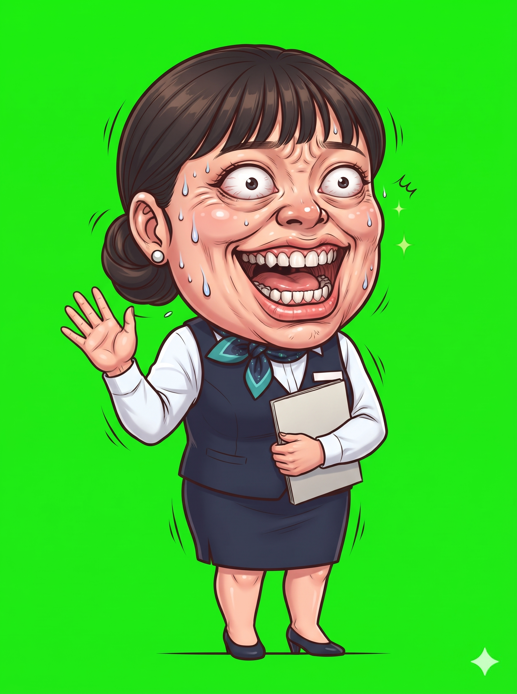
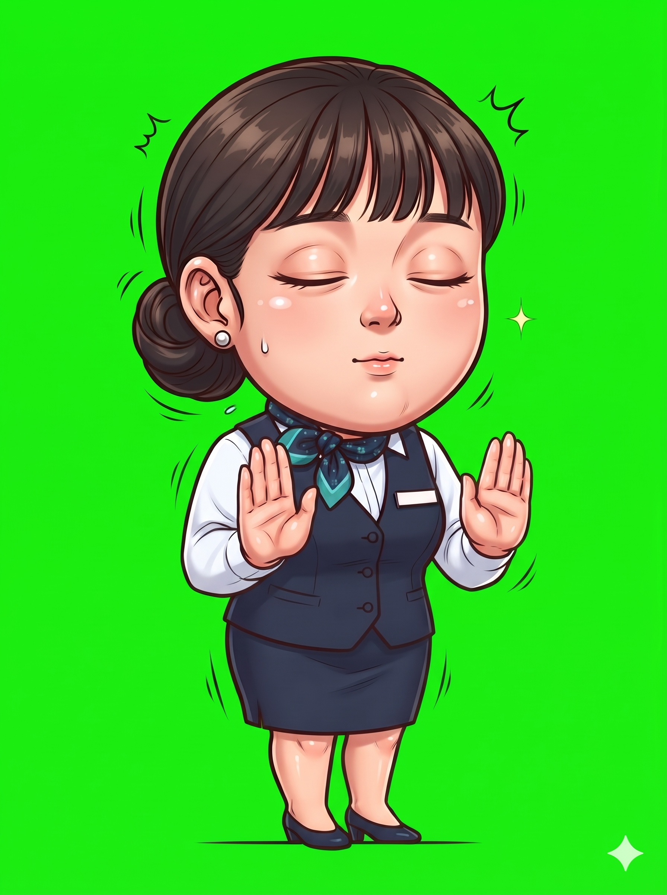
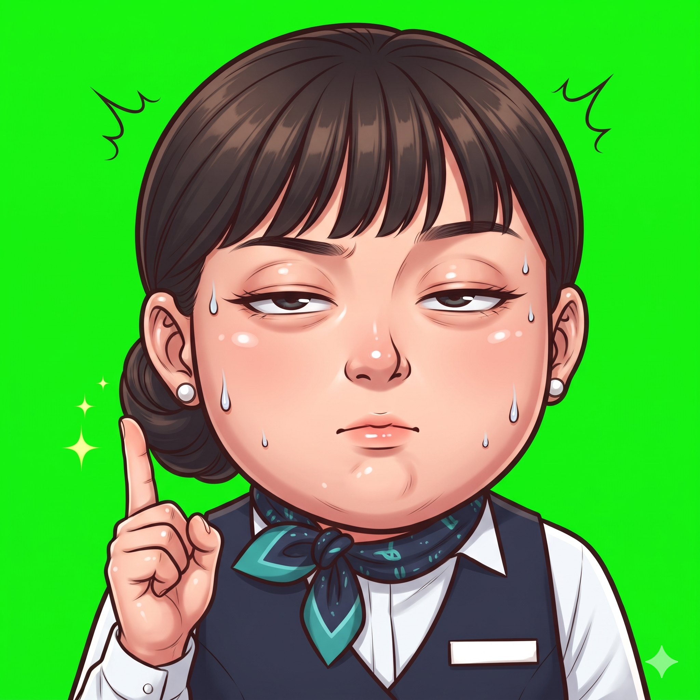
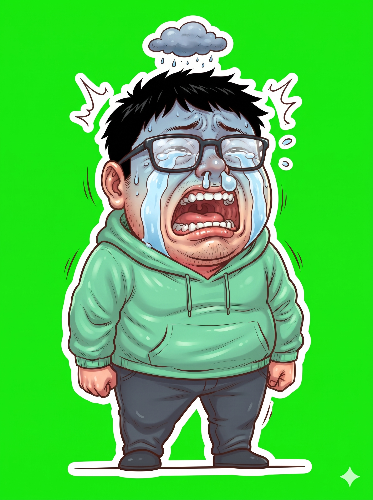
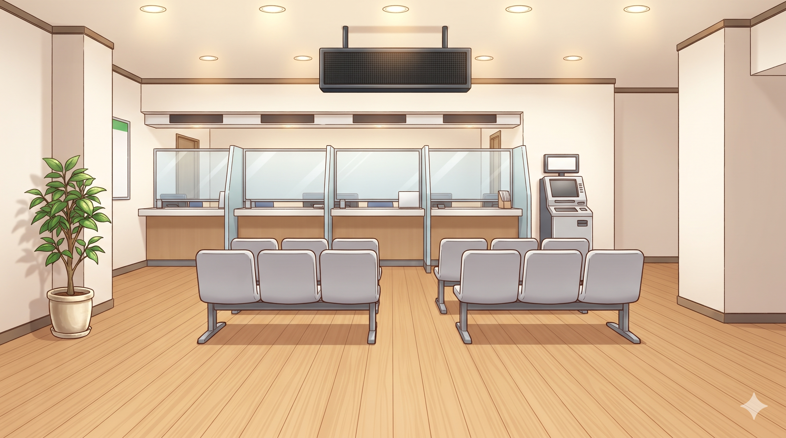
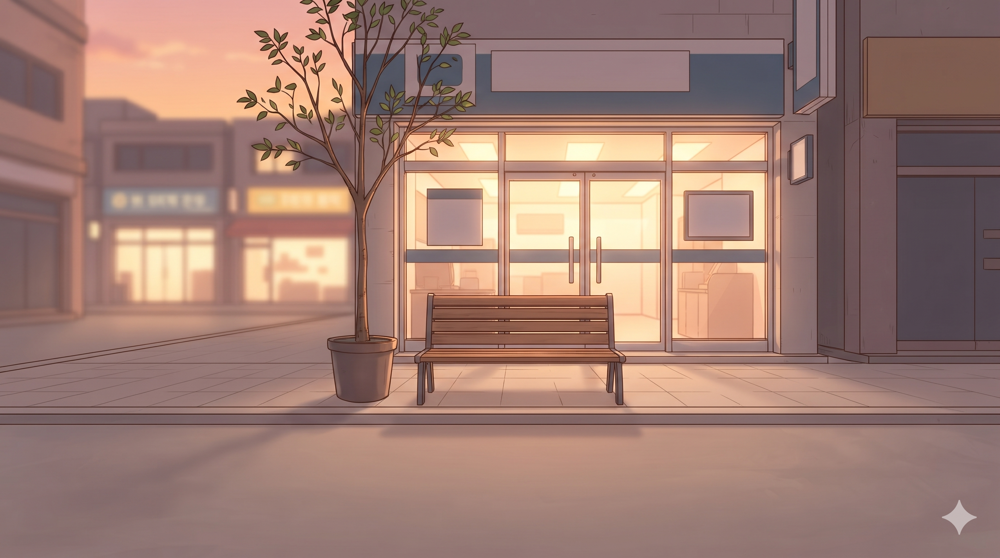
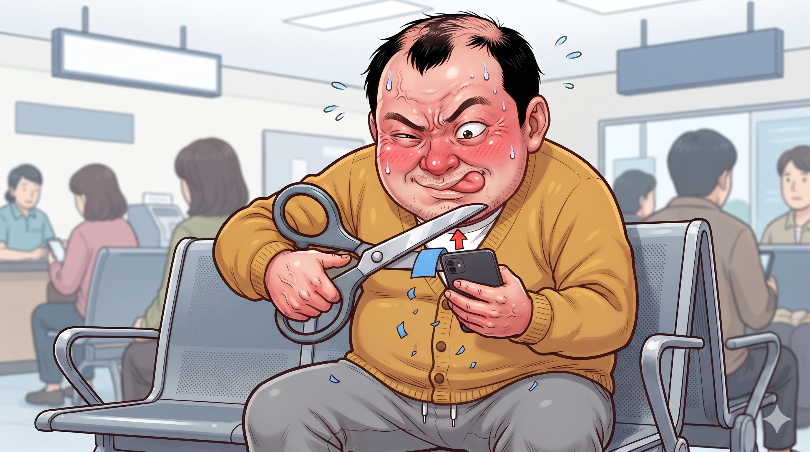
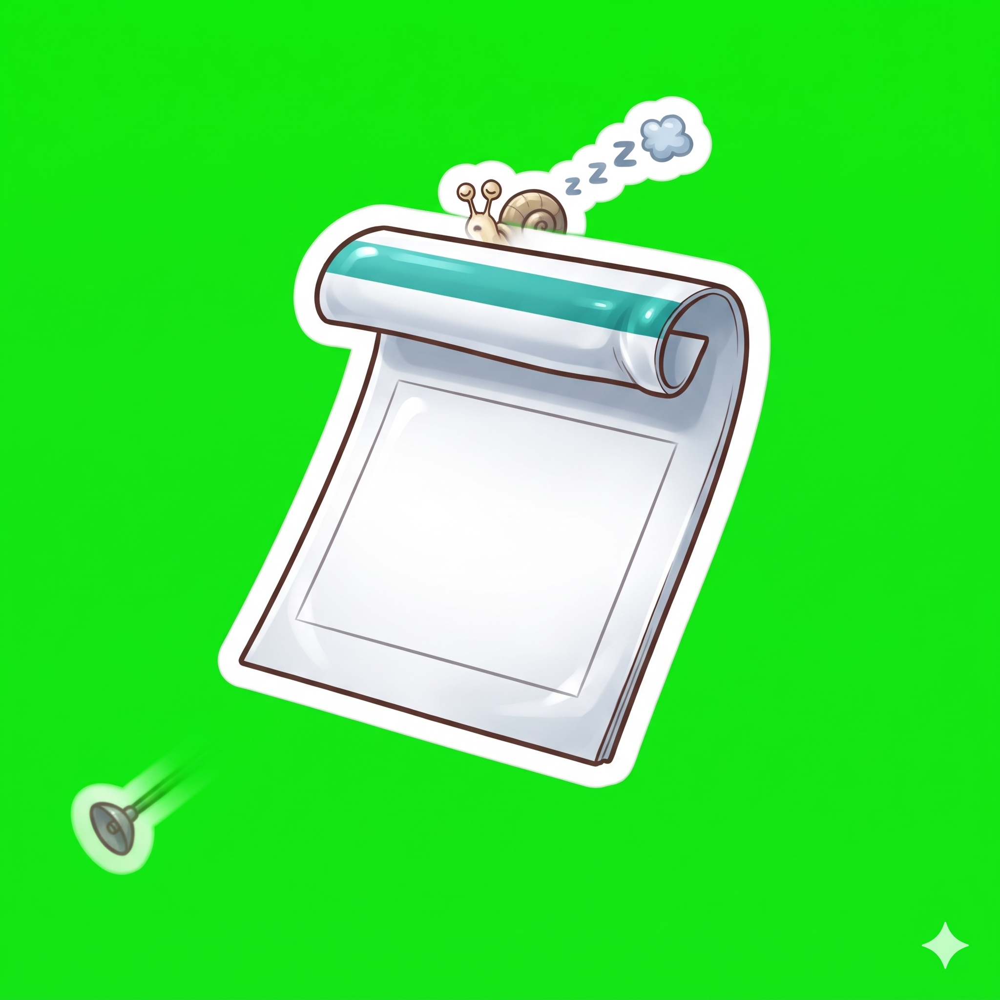

내모남불 ③ 주식편 · 오르면 · 내리면 · 단톡방 — 그림 확인 (33장)
결과(왼쪽)를 첨부한 기준 그림과 비교한다: 얼굴 · 머리 · 옷 · 피부 톤 · 선 굵기 · 과장 정도. 판정은 content/nm03-stock/prompts/jobs/review.json 에 "id": "ok" 또는 "redo: 이유" 로 적는다.
아빠 — 기본 common/dad/normal 확인 전
 결과①
결과① 화풍 앵커
화풍 앵커아빠 — 당황 common/dad/panic 확인 전
아이 — 기본 common/kid/normal 확인 전
 결과①화풍 앵커
결과①화풍 앵커엄마 — 기본 common/mom/normal 확인 전
 결과①화풍 앵커②
결과①화풍 앵커② 채널 프로필 — 오른쪽 위 안경 쓴 여자가 엄마③
채널 프로필 — 오른쪽 위 안경 쓴 여자가 엄마③ 채널 배너 — 맨 오른쪽 팔짱 낀 여자가 엄마
채널 배너 — 맨 오른쪽 팔짱 낀 여자가 엄마컷인 — 아빠 충격 common/cutin/dad-shock 확인 전
컷인 — 아빠 뿌듯 common/cutin/dad-proud 확인 전
 결과①화풍 앵커②같은 사람 유지용 기준 그림③
결과①화풍 앵커②같은 사람 유지용 기준 그림③ 그 사람 대표 컷인 (얼굴 · 피부 톤)
그 사람 대표 컷인 (얼굴 · 피부 톤)시그니처 — 아빠 네모 입막음 ① 손 올리기 common/cutin/dad-sig-1 확인 전
 결과①화풍 앵커②같은 사람 유지용 기준 그림③그 사람 대표 컷인 (얼굴 · 피부 톤)
결과①화풍 앵커②같은 사람 유지용 기준 그림③그 사람 대표 컷인 (얼굴 · 피부 톤)시그니처 — 아빠 네모 입막음 ② 입에 딱 common/cutin/dad-sig-2 확인 전
 결과①화풍 앵커②첫 번째 프레임 — 이 그림을 그대로 다시 그린다③그 사람 기준 그림 (normal)
결과①화풍 앵커②첫 번째 프레임 — 이 그림을 그대로 다시 그린다③그 사람 기준 그림 (normal)시그니처 — 아빠 네모 입막음 ③ 부들부들 common/cutin/dad-sig-3 확인 전
 결과①화풍 앵커②첫 번째 프레임 — 이 그림을 그대로 다시 그린다③그 사람 기준 그림 (normal)④바로 앞 컷
결과①화풍 앵커②첫 번째 프레임 — 이 그림을 그대로 다시 그린다③그 사람 기준 그림 (normal)④바로 앞 컷컷인 — 아이 질문 common/cutin/kid-ask 확인 전
컷인 — 아이 의심 common/cutin/kid-doubt 확인 전
 결과①화풍 앵커②같은 사람 유지용 기준 그림③
결과①화풍 앵커②같은 사람 유지용 기준 그림③ 그 사람 대표 컷인 (얼굴 · 피부 톤)
그 사람 대표 컷인 (얼굴 · 피부 톤)컷인 — 엄마 다 안다는 미소 common/cutin/mom-smirk 확인 전
컷인 — 엄마 어이없음 common/cutin/mom-sigh 확인 전
 결과①화풍 앵커②같은 사람 유지용 기준 그림③
결과①화풍 앵커②같은 사람 유지용 기준 그림③ 그 사람 대표 컷인 (얼굴 · 피부 톤)
그 사람 대표 컷인 (얼굴 · 피부 톤)은행 직원 — 기본 teller/normal 확인 전
결과①화풍 앵커
은행 직원 — 한 손 들어 번호를 부름 teller/call 확인 전

결과①화풍 앵커②같은 사람 유지용 기준 그림은행 직원 — 두 손바닥을 펴 보이며 "추천 안 합니다" teller/no-recommend 확인 전

결과①화풍 앵커②같은 사람 유지용 기준 그림은행 직원 정색 (컷인) cutin/teller-flat 확인 전

결과①화풍 앵커②같은 사람 유지용 기준 그림아빠 친구 — 기본 buddy/normal 확인 전
결과①화풍 앵커
아빠 친구 — 영상 통화 셀카 구도로 엉엉 buddy/cry 확인 전

결과①화풍 앵커②같은 사람 유지용 기준 그림배경 — 동네 은행 대기석 bg/bank-lobby 확인 전

결과①화풍 앵커배경 — 해질녘 은행 앞 벤치 bg/bank-dusk 확인 전

결과①화풍 앵커콜드 오픈 — 대기석에서 휴대폰 보며 벌떡 일어난 아빠 full/waiting-phone 확인 전
아빠의 상상 — 빨간 화살표 로켓을 탄 투자의 신 아빠 full/stock-god-imagine 확인 전
결과①화풍 앵커②같은 사람 유지용 기준 그림
아빠 컷인 — 파랗게 질림 "왜 파래?!" cutin/dad-blue 확인 전
ROUND 2 — 우는 친구 앞에서 "싸졌네? 사볼까?" 하는 아빠 full/dad-cheap 확인 전
결과①화풍 앵커②같은 사람 유지용 기준 그림③같이 나오는 사람 기준 그림 (normal)④같이 나오는 사람 기준 그림 (normal)
아빠 컷인 — 배를 움켜쥠 "아이고, 배야…" cutin/dad-bellyache 확인 전
결과①화풍 앵커②같은 사람 유지용 기준 그림③아빠 컷인 표정 참고
ROUND 3 — 캡처에서 파란 부분을 잘라내는 아빠 full/dad-crop 확인 전

결과①화풍 앵커②같은 사람 유지용 기준 그림반전 — 빨간 화살표 휴대폰을 쓱 보여 주는 엄마 full/mom-reveal 확인 전
아이 눈높이 — 해질녘 벤치, 새 통장을 든 아이와 아빠 full/bench-dusk 확인 전
소품 — 빨간 위 화살표 그래프 휴대폰 prop/phone-up 확인 전
결과① 소품 화풍 앵커 (사람 없는 소품)
소품 화풍 앵커 (사람 없는 소품)
소품 — 파란 아래 화살표 그래프 휴대폰 prop/phone-down 확인 전
결과①소품 화풍 앵커 (사람 없는 소품)
소품 — 은행 번호표 prop/number-ticket 확인 전

결과①소품 화풍 앵커 (사람 없는 소품)소품 — 새 어린이 통장 prop/bankbook 확인 전
결과①소품 화풍 앵커 (사람 없는 소품)